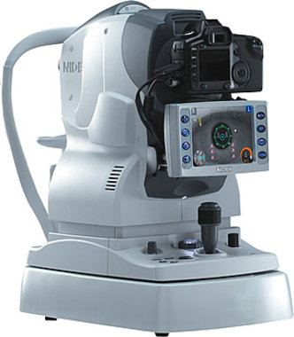

What is it?
NIDEK AFC-230: A smarter retinal camera
Fundus retinal cameras are used by optometrists for monitoring disease progression, diagnosing conditions, and conducting screening programs where images are analysed in detail.
The NIDEK AFC-230 takes advantage of the latest technology to become a truly "smart" camera. Automatic functions like full 3D eye tracking, autofocus, and auto small-pupil and blink detection make professional quality imaging easy and consistent for every patient visit.
Key Features
Built for precision and clarity
Full 3D Eye Tracking
Automatic 3D tracking keeps the retina aligned even as the patient shifts fixation, producing sharp and consistent captures every time.
Auto Small Pupil Detection
Most patients do not require dilation drops. The camera automatically adapts to small pupils and detects blinks for a faster, more comfortable experience.
Peripheral Retina Imaging
Extensive internal fixation control combined with 3D auto tracking allows the peripheral retina to be imaged more easily than any other camera on the market.
Why It Matters
What this means for your eye health
Auto Stereo mode maintains a fixed offset between image pairs, giving your optometrist three-dimensional posterior pole detail for optimal retinal analysis.
High resolution images allow your doctor to compare visits side by side, catching subtle changes in the retina before they affect your vision.
The AFC-230's small pupil technology means your appointment stays fast and comfortable, without the inconvenience of dilation in most cases.
Clinical Use
Conditions monitored with retinal photography
See your retina in high definition
Ask about our 3D retinal camera at your next visit. Book online or give us a call.
Book an AppointmentOr call us at 1-888-381-2677
* Confirm availability at your nearest location.